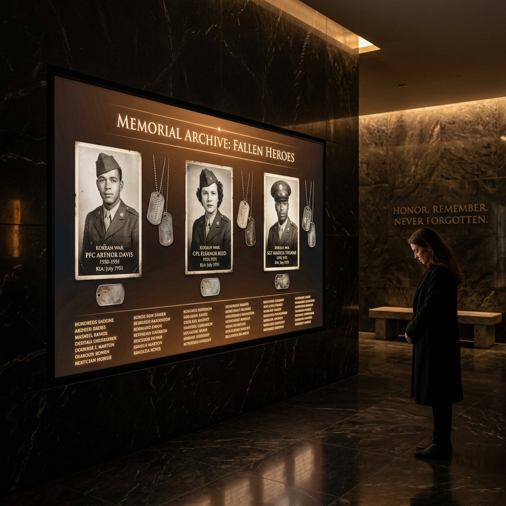
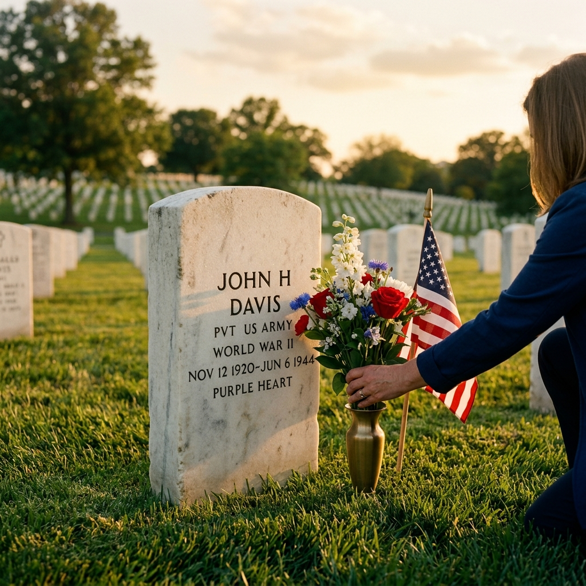

Giai Điệu Tri Ân
Bản hùng ca "Chiến Sĩ Vô Danh" (Sáng tác: Phạm Duy) vang lên như một nén tâm nhang thành kính dâng lên những người anh hùng đã ngã xuống vì tự do.
Bức Tường Ảo (Virtual Wall)
Tâm điểm của Global Faith Temple là dự án xây dựng một bức tường cẩm thạch dài khoảng nửa dặm (half-mile), cao 10 feet. Đây sẽ là nơi vinh danh và khắc tên tất cả các Anh Hùng Tử Sĩ đã ngã xuống vì tự do trong Chiến tranh Việt Nam.
Dưới đây là khuôn mẫu lưu trữ hồ sơ số của một vị Anh hùng trên Bức tường Ảo.
Lê Văn Tống (Lý Tống)
Trung Úy - Phi Đoàn 548 Khu Trục "Ó Đen"
Sinh quán: An Cựu Đông, Thừa Thiên Huế
Năm sinh: 1946
Phi vụ cuối cùng: Phan Rang (Tháng 4/1975)
- Global Faith Temple
Lưu Trữ Lịch Sử Số (Digital Archives)
Bên cạnh đài tưởng niệm vật lý, chúng tôi xây dựng một kho lưu trữ số hóa. Mỗi cái tên trên bức tường không chỉ là một dòng chữ, mà là một con người với gia đình, ước mơ và câu chuyện cuộc đời.
Kho lưu trữ sẽ cho phép tra cứu, tìm kiếm và đóng góp tư liệu lịch sử, giúp thế hệ trẻ hiểu rõ hơn về những hy sinh thầm lặng.
Đọc Ký Sự: Ó Đen Lý Tống
Trùng Tu Mộ Phần
Chúng tôi thực hiện các hoạt động bảo tồn, dọn dẹp và chăm sóc phần mộ của các chiến sĩ, đảm bảo nơi an nghỉ của họ luôn được trang nghiêm và được tôn kính.
